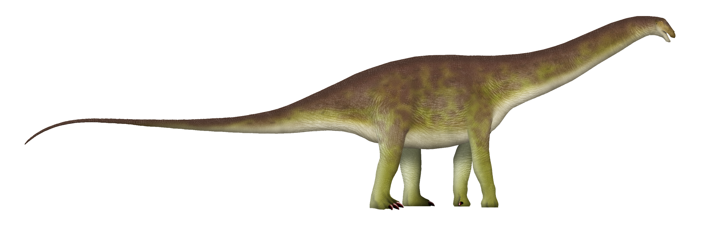

Beranda / Koleksi / Brontosaurus
Brontosaurus
Raksasa berleher panjang dari periode Jura Akhir. Namanya berarti “kadal guntur”—dan popularitasnya memang sebesar reputasinya.

Ilustrasi: TotalDino · CC0 · Wikimedia CommonsSi kadal guntur
Brontosaurus adalah genus sauropoda dalam keluarga Diplodocidae yang hidup di wilayah yang sekarang menjadi Amerika Utara pada Jura Akhir. Tubuhnya besar, lehernya panjang, dan ekornya memanjang jauh ke belakang.
Nama Brontosaurus diperkenalkan oleh paleontolog Othniel Charles Marsh pada 1879. Nama itu berasal dari bahasa Yunani dan biasa diterjemahkan sebagai “thunder lizard” atau kadal guntur.
Hal menarik tentang Brontosaurus
- Namanya sempat “hilang”. Pada 1903, Brontosaurus dianggap sebagai genus yang sama dengan Apatosaurus sehingga nama Apatosaurus lebih diprioritaskan.
- Namanya kembali. Analisis anatomi dan kekerabatan berskala besar oleh Tschopp dan kolega (2015) mengusulkan Brontosaurus sebagai genus tersendiri.
- Bukan satu-satunya raksasa. Ia hidup bersama sauropoda lain di ekosistem Formasi Morrison, termasuk Apatosaurus, Diplodocus, dan Camarasaurus.
- Tidak mengunyah seperti kita. Giginya membantu mengambil dan memotong tumbuhan, tetapi sauropoda tidak memiliki kemampuan mengunyah kompleks seperti mamalia.
Apakah Brontosaurus benar-benar genus tersendiri?
Inilah salah satu kisah taksonomi paling terkenal dalam paleontologi dinosaurus. Selama puluhan tahun, Brontosaurus ditempatkan sebagai sinonim junior Apatosaurus. Studi Tschopp, Mateus, dan Benson pada 2015 menganalisis variasi anatomi banyak spesimen Diplodocidae dan menyimpulkan bahwa Brontosaurus layak dipisahkan kembali.
Catatan ilmiah
Klasifikasi dinosaurus dapat berubah ketika spesimen baru ditemukan atau ketika analisis anatomi dan kekerabatan diperbarui. Jadi, status genus ini sebaiknya dibaca sebagai hasil penelitian taksonomi yang terus didiskusikan, bukan keputusan yang kebal revisi.
Hidup bersama, makan dalam jumlah besar
Sauropoda adalah herbivora dengan kebutuhan energi dan asupan tumbuhan yang sangat besar. Bentuk gigi dan rahangnya menunjukkan bahwa mereka memotong atau mencabut tumbuhan, lalu menelannya tanpa proses pengunyahan panjang seperti pada mamalia.
Fosil sauropoda dari beberapa lokasi ditemukan dalam kelompok atau akumulasi yang mengisyaratkan interaksi sosial. Namun, kita tidak boleh otomatis menyimpulkan bahwa setiap spesies, termasuk Brontosaurus, selalu bepergian dalam kawanan. Perilaku berkelompok perlu dinilai dari konteks fosil dan jejak yang ditemukan.
Dan soal batu yang tertelan untuk membantu pencernaan: gastrolit memang ditemukan pada sebagian sauropoda, tetapi studi tentang Formasi Morrison menunjukkan bukti gastrolit yang benar-benar meyakinkan jauh lebih jarang daripada dugaan lama. Belum ada dasar kuat untuk menyatakan semua sauropoda mengandalkan “batu penggiling” di perutnya.
Raksasa yang tetap sementara
Ada sesuatu yang membuatku tertarik pada sauropoda: membayangkan makhluk sebesar itu bergerak melintasi lanskap purba, mungkin mencari makan bersama, menghabiskan begitu banyak tumbuhan hanya untuk mempertahankan hidupnya.
Dan pada akhirnya, mereka pun tidak bertahan selamanya. Sekitar 66 juta tahun lalu, kepunahan massal di akhir Kapur mengakhiri keberadaan semua dinosaurus non-avian. Ukuran, kekuatan, dan dominasi tidak membuat kehidupan menjadi abadi.
Bagiku, ada pengingat sederhana di sana: sesuatu bisa pernah begitu besar dan mengagumkan, tetapi tetap sementara. Mungkin justru itu yang membuat keberadaannya layak kita kagumi.
Catatan ini adalah refleksi personal, bukan kesimpulan ilmiah tentang makna kepunahan.
Ilustrasi Brontosaurus oleh TotalDino, tersedia sebagai CC0 melalui Wikimedia Commons. Gambar merupakan interpretasi visual, bukan bukti langsung untuk warna, jaringan lunak, atau seluruh detail anatomi.